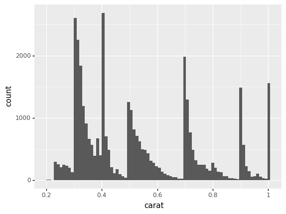
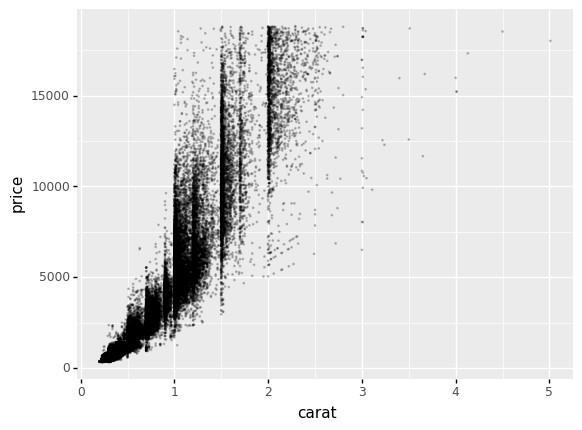

EDA Demo
Contents
EDA Demo#
ZDR, 2022
This is a live demo notebook that I use in presentations.
Setup#
# 1. Main package import
import grama as gr
# 2. Set up grama
DF = gr.Intention()
# 3. Show figures correctly
%matplotlib inline
Load a dataset
from grama.data import df_diamonds
Simple checks#
(
df_diamonds
>> gr.tf_head()
)
| carat | cut | color | clarity | depth | table | price | x | y | z | |
|---|---|---|---|---|---|---|---|---|---|---|
| 0 | 0.23 | Ideal | E | SI2 | 61.5 | 55.0 | 326 | 3.95 | 3.98 | 2.43 |
| 1 | 0.21 | Premium | E | SI1 | 59.8 | 61.0 | 326 | 3.89 | 3.84 | 2.31 |
| 2 | 0.23 | Good | E | VS1 | 56.9 | 65.0 | 327 | 4.05 | 4.07 | 2.31 |
| 3 | 0.29 | Premium | I | VS2 | 62.4 | 58.0 | 334 | 4.20 | 4.23 | 2.63 |
| 4 | 0.31 | Good | J | SI2 | 63.3 | 58.0 | 335 | 4.34 | 4.35 | 2.75 |
(
df_diamonds
>> gr.tf_describe()
)
| carat | depth | table | price | x | y | z | |
|---|---|---|---|---|---|---|---|
| count | 53940.000000 | 53940.000000 | 53940.000000 | 53940.000000 | 53940.000000 | 53940.000000 | 53940.000000 |
| mean | 0.797940 | 61.749405 | 57.457184 | 3932.799722 | 5.731157 | 5.734526 | 3.538734 |
| std | 0.474011 | 1.432621 | 2.234491 | 3989.439738 | 1.121761 | 1.142135 | 0.705699 |
| min | 0.200000 | 43.000000 | 43.000000 | 326.000000 | 0.000000 | 0.000000 | 0.000000 |
| 25% | 0.400000 | 61.000000 | 56.000000 | 950.000000 | 4.710000 | 4.720000 | 2.910000 |
| 50% | 0.700000 | 61.800000 | 57.000000 | 2401.000000 | 5.700000 | 5.710000 | 3.530000 |
| 75% | 1.040000 | 62.500000 | 59.000000 | 5324.250000 | 6.540000 | 6.540000 | 4.040000 |
| max | 5.010000 | 79.000000 | 95.000000 | 18823.000000 | 10.740000 | 58.900000 | 31.800000 |
Visualize#
1d EDA#
Carat#
(
df_diamonds
>> gr.ggplot(gr.aes("carat"))
+ gr.geom_histogram()
)
/Users/zach/opt/anaconda3/envs/evc/lib/python3.9/site-packages/plotnine/stats/stat_bin.py:95: PlotnineWarning: 'stat_bin()' using 'bins = 142'. Pick better value with 'binwidth'.
<ggplot: (8784852778427)>
Focus on a range of carat values
(
df_diamonds
>> gr.tf_filter(DF.carat <= 1.0)
>> gr.ggplot(gr.aes("carat"))
+ gr.geom_histogram()
)
/Users/zach/opt/anaconda3/envs/evc/lib/python3.9/site-packages/plotnine/stats/stat_bin.py:95: PlotnineWarning: 'stat_bin()' using 'bins = 35'. Pick better value with 'binwidth'.

<ggplot: (8784905510870)>
Refine the bin count to better show patterns
(
df_diamonds
>> gr.tf_filter(DF.carat <= 1.0)
>> gr.ggplot(gr.aes("carat"))
+ gr.geom_histogram(bins=80)
)

<ggplot: (8784852787369)>
2d EDA#
Price v Carat#
(
df_diamonds
>> gr.ggplot(gr.aes("carat", "price"))
+ gr.geom_point()
)

<ggplot: (8784869332384)>
Modify the dots to illustrate patterns
(
df_diamonds
>> gr.ggplot(gr.aes("carat", "price"))
+ gr.geom_point(size=1/8, alpha=1/5)
)

<ggplot: (8784889743153)>
Ending#
EDA helps us find patterns in a dataset.
Later, we’ll learn how to use these findings to do useful engineering work!